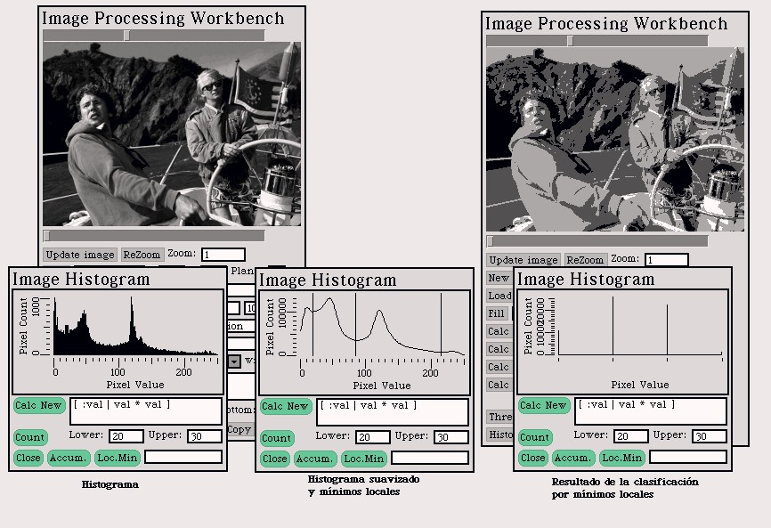
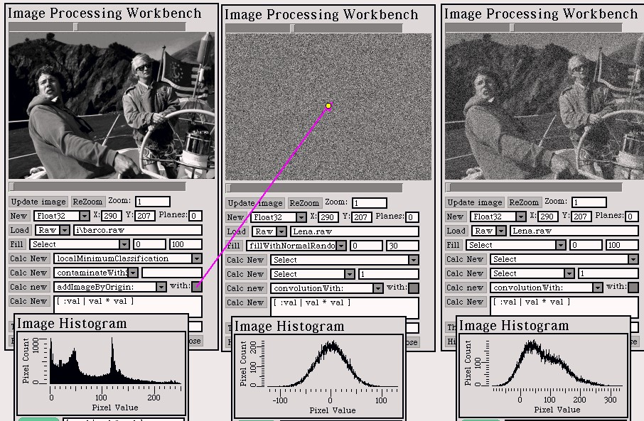

PhotoSqueak
1.0
PhotoSqueak
1.0
by Juan Manuel Vuletich
Back to Juan's studio


Part 3
Exercise 1
Introduction
Histogram Equalization.

Development
First I implemented Histogram equalization of monochromatic
images. The contrast is greatly enhanced, and no artificial artifacts are
seen.
Then I tried the technique to color (multiband) images.
I equalized each band on its own. The result is not good, because the colors
in the image are modified. I also included the posibility to equalize the
norm of the pixels, weighting together all the color bands. The result
is much better. The image on the left is the norm-equalized one, and the
image on the righ is the band-equalized one.

Exercise 2
Introduction
It was asked to do a local minimum image classification.
Development
I implemented a "smooth histogram". Local minimum are
found, and the image is classified. I did not implement this techique on
color (multiband) image. This would require finding minimum values on a
multi-dimensional space, and thus requires further study.

Exercise 3
Introduction
It was asked to generate noise images with several distributions.
Development
I first implemented a normal distribution noise generation,
based on the Box-Müller method. Then I implemented the noise image
generation. For multiband images, each band is generated separatedly. When
trying to show histograms it became evident the need for aproximate histograms,
because in noisy images, no pixel value is usually used twice. We would
end with a huge histogram where most entries have only one or two pixels.
What we really need is the "density" of the histogram, in pixel value intervals.
An Aproximate Histogram is a hibrid between an static
and a dynamic histogram and is really useful for Float images. The actual
range of the values of the image is taken and divided in a number of equal
width intervals. For each pixel value in the image, the corresponding interval
is found. So, the histogram counts the pixels in each interval. See how
it looks in this example:

Exercise 4
Introduction
It was asked to contaminate images with Salt & Pepper,
Aditive and Multiplicative noise, and in different distributions, the test
images. It was asked to apply different filters and to draw conclusions.
I didn't include examples here, but you can try them if you want.